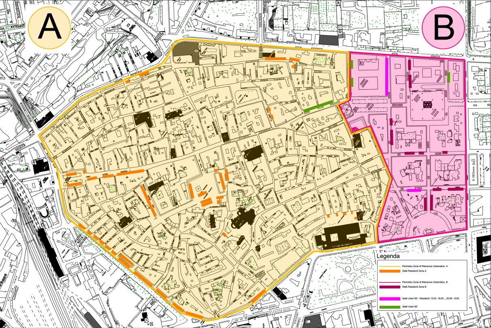

Centro Storico di Sassari
Il centro storico di Sassari rappresenta il cuore della città, sviluppato in maniera geometrica per adattarsi alle caratteristiche del territorio e alla storia. Le aree principali includono Piazza Sant'Antonio, Corso Vico, Piazza Castello, e molti altri punti di interesse culturale e sociale.
Punti di Ritrovo per Adolescenti
Piazza Santa Caterina
Piazza ZTL con WiFi gratis, ritrovo di giovani, concerti e giochi.
Piazza Sant'Antonio
Area frequentata da persone di etnie differenti, punto di ritrovo per stranieri.
Piazza Castello
Adibita a famiglie, ben illuminata, frequentata da adolescenti e gruppi di giovani.
Attività per il Tempo Libero
Organizzate
- ASD Centro Storico Sassari Calcio - asdcentrostorico.ss@gmail.com
- Agesci Gruppo Scout SS2 - Via Artiglieria, Chiesa Santa Maria di Betlem
Non Organizzate
Area giochi per bambini in Via Tavolara. Gli adolescenti utilizzano le aree appartate per ritrovarsi.
Servizi al Cittadino
- Punto Salute di Comunità - Via Casaggia n° 10, Tel: 079/279962, 079/279963
- Caritas - Buste alimentari in Largo Seminario 6, Mensa in Via Luigi Rolando 5
- Informa Giovani - Piazza Santa Caterina 25, Tel: 800327171
- Biblioteca Comunale - Piazza Tola 1, Tel: 079 273780, biblioteca@comune.sassari.it
Reti Urbane e Trasporti
- Taxi: Stazione ferroviaria e Piazza d'Italia.
- Capolinea Tram: Via Tavolara.
- Linea 8: Copre ampiamente il centro storico, collegando Piazza Stazione con Piazzale Segni e attraversando vie importanti come Corso Vico e Piazza d’Italia. Partenze regolari, rendendo il centro facilmente accessibile.
- Linea VV: Passa per Piazza Santa Maria e Corso Regina Margherita, importante per l'accesso agli uffici amministrativi e il Tribunale dei Minori.
- Linea CS: Collega il centro storico con quartieri come Lu Fangazzu e Viale Dante, attraversando Corso Trinità e Viale Umberto, ideale per residenti e visitatori del centro.
- Linee di autobus: BB/MA/MP per Platamona, BA per Sacchetto, e molte altre linee che collegano Sassari con le periferie e il centro storico.
Scuole e Istruzione nel Quartiere
- Asilo Comunale - Via Sebastiano Satta 4
- Istituto Comprensivo San Donato - Scuola primaria e infanzia, Tel: 0792845002, ssic85200n@istruzione.it
- Scuola Media Statale - Via Alessio Fontana 3